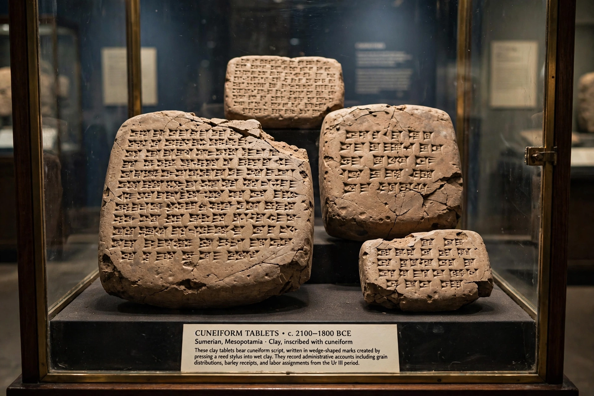

The Library of Ashurbanipal is a collection of more than 30,000 cuneiform tablets and fragments assembled by the Neo-Assyrian king Ashurbanipal (r. 668 – c. 627 BC) at his palace in Nineveh, in modern-day northern Iraq. It is considered the first systematically collected library in the world and one of the most important sources for Mesopotamian literature, religion, science and medicine.
Ashurbanipal, unusually literate for an Assyrian king, sent scribes throughout his empire — especially to Babylonia — to copy or confiscate texts. The collection covers omen series, rituals, prayers, incantations, medical and astronomical treatises, dictionaries and lexical lists, administrative records, letters, and literary works. Its most famous single item is the "Flood Tablet," the eleventh tablet of the Epic of Gilgamesh, whose flood narrative closely parallels the biblical story of Noah; its translation by George Smith in 1872 caused a sensation.
The royal palaces at Nineveh were excavated in the 1840s and 1850s by Austen Henry Layard and later by Hormuzd Rassam, who uncovered the bulk of the library in 1853. The tablets had been baked hard when the palace burned during the sack of Nineveh in 612 BC, which helped preserve them. The fragments are now housed mainly in the British Museum, where scholars continue the enormous task of joining, cataloguing and translating them.
Because Ashurbanipal ordered copies of older Babylonian and Sumerian works, the library preserved texts that would otherwise have been lost, giving modern Assyriology the foundation texts of Mesopotamian civilisation — including the Enuma Elish creation epic and the standard version of Gilgamesh.